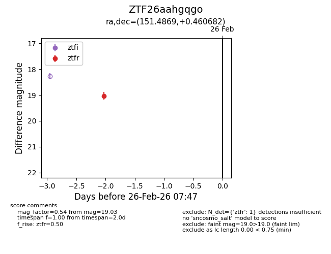
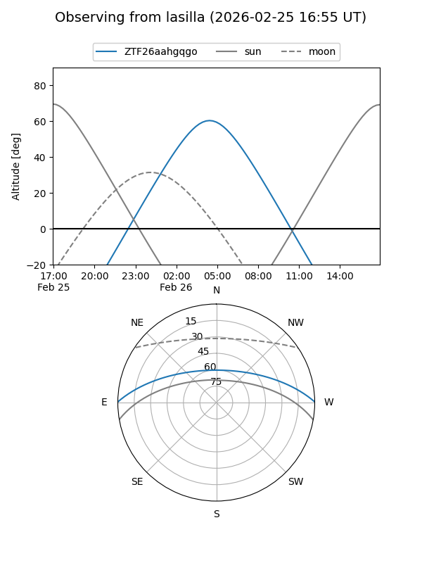
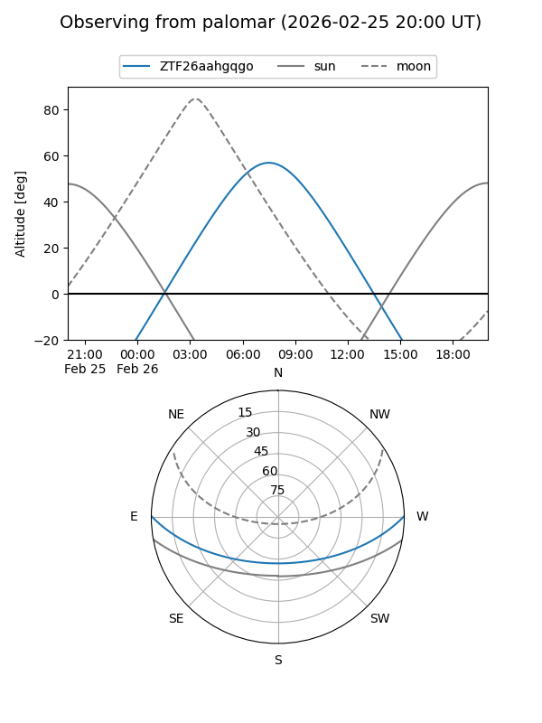

ZTF26aahgqgo
Target ZTF26aahgqgo at 2026-02-26 07:48
Aliases and brokers:
FINK: link
Lasair: link
ALeRCE: link
alt names
ZTF26aahgqgo (ztf,fink_ztf)
Coordinates:
equatorial (ra, dec) = 151.4869,+0.46068
equatorial (HMS+DMS) = 10:05:56.86,+00:27:38.45
galactic (l, b) = (239.8117,+42.18421)
Flags:
Photometry:
last ztfr=19.03
1 ztfr detections
Lightcurve

Visibility


Additional plots